Kloébo a été lancé en septembre 2021 et j'ai rejoins l'équipe en août 2021. Nous avons du tout construire de zéro.
Le fondateur, Fabien Jouanicot a décidé de se lancer dans la décoration intérieur et plus précisement, les claustras intérieurs (des séparations en tasseaux de bois faisant guise de cloison design).
Mon rôle : Responsable Digitale
Mes missions :
Créer une communauté via les réseaux sociaux, notamment Instagram et Pinterest
Créer le site internet et le développer en e-commerce par la suite
Créer un trafic pertinent sur le site internet grâce au SEO et aux backlinks.
Tout cela avec un très petit budget.
Pinterest :
 